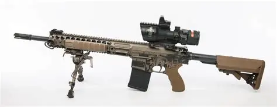
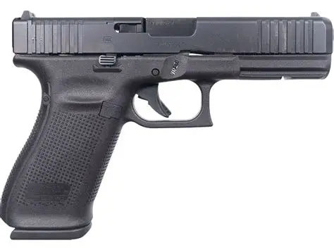

Las armas ligeras son herramientas utilizadas por unidades militares para defensa, operaciones tácticas y misiones de precisión. Su diseño prioriza movilidad, ergonomía y confiabilidad en distintos entornos.

Diseñado para precisión y estabilidad. Utilizado en operaciones terrestres y misiones de reconocimiento.

Arma secundaria de uso estándar para personal militar. Compacta y confiable.